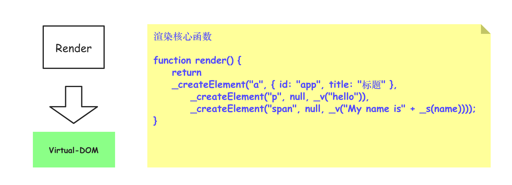
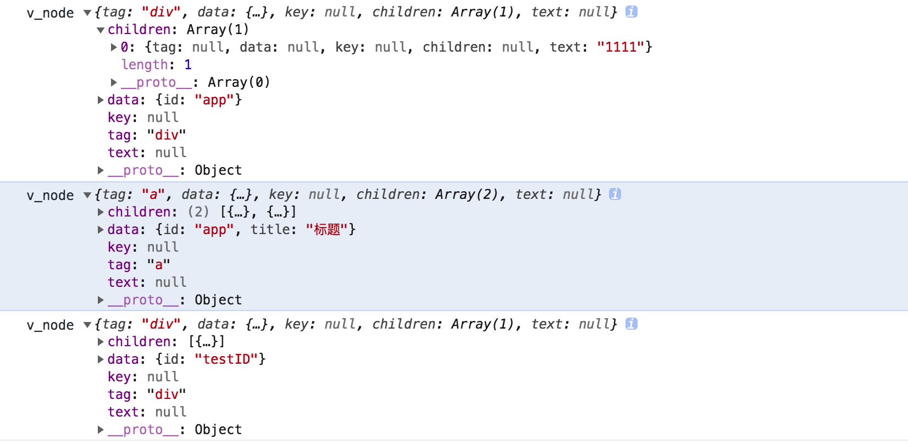

Gossip - generate Virtual-DOM
May 6, 2019 ✧ 字数统计:2.6k(字) ♨︎ 阅读时长:12(分钟)
在 [ast && render](http://wendingding.com/2019/08/26/Gossip%20-%20ast%20&&%20render/) 这篇文章中介绍了 ast 树和 render函数生成的过程，本文介绍通过 `render函数创建DOM`的基本过程(仅仅核心部分)，更多的细节也可以参考 [Vue 框架源码](https://github.com/vuejs)自行探索 。

Render => Virtual-DOM
1 | /* 模拟数据 */ |
给出上面代码生成的虚拟 DOM对应的对象结构图。
Vue 框架源码核心
在 Vue 框架中，我们主要三种方式来渲染标签。
1 | 1、实例化 Vue 的过程中，通过 el 来选择实例挂载的标签。 |
我们给出对应的 Vue 渲染标签(组件)的对应代码。
1 | <script src="./node_modules/vue/dist/vue.js"></script> |
在上面的代码中，我们通过三种方式来进行渲染，它们将生成下面的标签结构。
1 | <div id="app1">1111</div> |
在三种渲染的方式中，其中el 把挂载渲染的标签到页面，template 会直接执行替换操作，render函数同 template 一致。我们知道，无论使用什么样的方式来渲染 Vue框架的内部最终都是使用 render函数来进行处理的。
接下来，我这里通过代码简单模拟 render 函数渲染生成标签和虚拟 DOM 的过程。为了保持基本一致，我这里改造下上文的代码，并提供 Vue 这个构造函数(Class),并把涉及到的诸多方法都写到Vue原型对象上面以供实例化对象调用。
1 | /* 第一部分代码：主要处理模板编译 */ |
1 | /* 第二部分代码：主要处理虚拟 DOM 的生成 */ |
1 | /* 第三部分：测试代码 */ |
在上面的代码中，第一部分代码大部分来自于 ast && render 这篇博客，略有修改,把三种(挂载)渲染方式的情况下生成的虚拟 DOM 对象打印出来(参考下图)。
